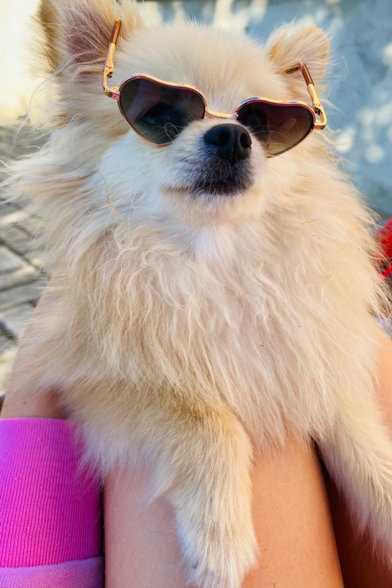

Порода Шпиц померанский.
- Порода:Шпиц померанский.
- Год рождения: 2020.
- Вес:2,1 киллограмм.
- Высота в холке:17сантиметров.
Внешний вид
У померанского шпица мягкая набивная пушистая шерсть, короткая небольшая мордочка и пушистый лоб. Шпицы не часто линяют.

Милый комочек Счастья.
Пушистый клубок.
Характер породы
Миниатюрный шпиц обладает весёлым игривым нравом, отличным слухом и преданным характером.
Несмотря на малый рост, шпицы могут за себя постоять, они не пугливы и даже отважны.
Шпиц любит движение, прогулку и игру.
Для здоровья и развлечения собаки важны умеренные физические нагрузки. Померанский шпиц может играть с детьми, он активен и энергичен, но в то же время не доставляет особых хлопот, так как слушается своего хозяина.